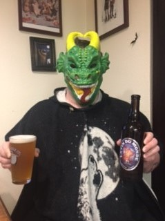
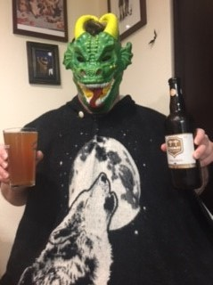
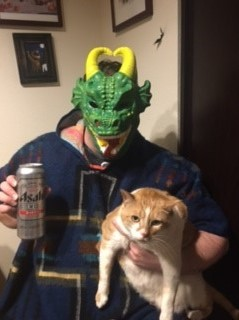
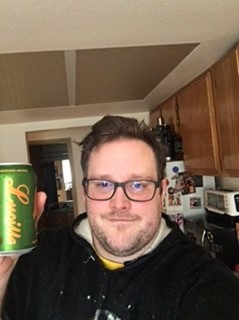
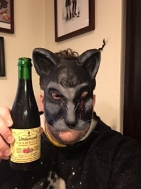

UNIBROUE - LA FIN DU MONDE - Belgian Style Tripel - 9% ABV
Thanks for the beer, Bigazzdolphin! This hearty 9% ABV Belgian style triple ale was brewed in Chambly, Canada and developed in the Middle Ages by Trappist monks. They intended it to be drank on special occasions, but I’m taking it to pound town on a balmy Thursday night. This beast is mildly yeasty with notes of malt, fruit, and spice. Followed by a dry finish.
CHIMAY - CINQ CENTS WHITE TRIPEL- 8% ABV
Thanks for the beer, Spyder! This ale was brewed within the walls of an existing Trappist monastery under the control of the Trappist community in Baileux, Belgium. A major part of this beer’s sales revenue is used by the monks to support their charitable works. Since 1862, Chimay’s secondary fermented ales have neither been pasteurized nor filtered and only natural ingredients are used. Getting drunk for a good cause...sounds great to me!
Asahi Super Dry- Asahi Breweries Ltd - Japanese Rice Lager - 5.2% ABV
Thanks again, Spyder! This super dry Japanese beer is intended to be drank during all seasons and was brewed in Toronto, Canada. You’ve probably drank your fair share of this stuff if you frequent sushi joints. It’s a real spot hitter.
Lucile - Georgetown Brewing - IPA - 7% ABV
Thanks for the beer, Katie! Here it is, folks. The mother of all IPAs. It’s one of my all-time favorites at least. Brewed locally in good ol’ Seattle, WA. The aroma is subtle pine and citrus, and it tastes like it smells. This is the real deal.
Framboise - Lindeman’s Brewery - Raspberry Lambic Beer - 2.5% ABV
Thanks again, Katie! This stuff is great. Do you like raspberries? Do you like beer? If so, you’ll love this stuff. This tasty nectar has been brewed for six generations by Lindeman’s in Vlezenbeek, Belgium. Its rich, sweet raspberry flavor and character will knock your socks off.